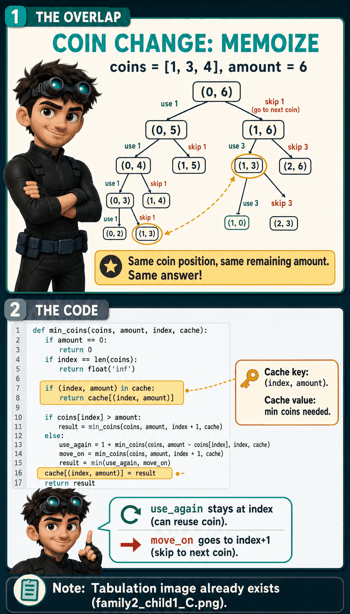
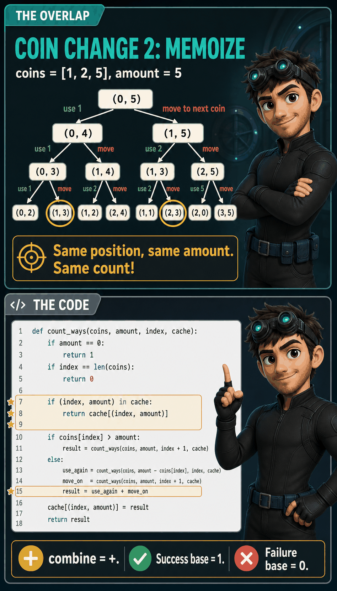
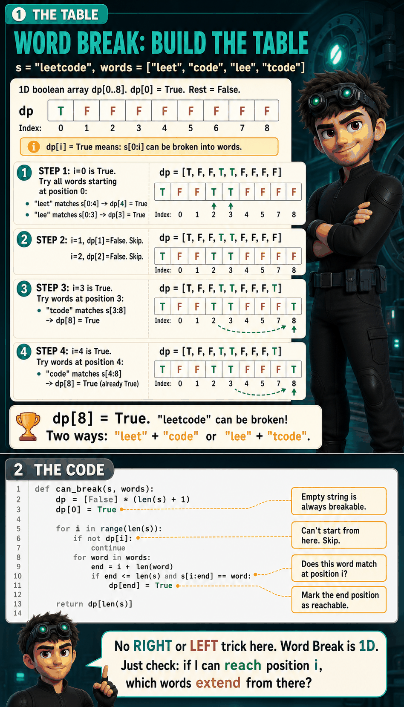

The Problem

What are we solving?
You have items. Each has a weight and a value. You have a bag with a weight limit. You can use each item as many times as you want (unlimited supply). What's the maximum value you can fit?
The smarter approach: don't think about ALL items at once. Look at ONE item and decide what to do with it.
Finding the Choices

What can I do with this ONE item?
I'm looking at one item. I have exactly two options:
Bag capacity shrinks by the item's weight.
I stay at this item (it has unlimited copies, I might want another one).
Bag capacity stays the same.
I advance to the next item. Done with this one forever.
Watch the choices play out
Items: Gold(3kg, $4), Ruby(1kg, $2). Bag = 5kg.
At Gold (3kg, $4), bag=2: 3kg > 2kg. Doesn't fit! Forced to move on.
At Ruby (1kg, $2), bag=2: USE Ruby. Value +$2. Bag: 2 → 1. Stay at Ruby.
At Ruby (1kg, $2), bag=1: USE Ruby. Value +$2. Bag: 1 → 0. Bag full!
Total: Gold + Ruby + Ruby = $4 + $2 + $2 = $8
Both choices give a value. Pick whichever gives more:
use_again = value + solve(remaining with SAME item)
move_on = solve(remaining with NEXT item)
answer = max(use_again, move_on)What Variables Do I Need?
What information must I know to solve the remaining subproblem?
After USE: bag_limit changed, index stayed the same.
After MOVE ON: index changed, bag_limit stayed the same.
So two things are changing. Are both necessary?
Different items remain. If I'm at Gold vs Ruby, different choices are available. Remove this and I can't tell which items I've already considered.
Remaining capacity determines what fits. A 5kg bag and a 2kg bag give different answers. Remove this and two completely different situations look identical.
Not needed. Value accumulates through the return values (
value + max_value(...)). The function returns how much value can be added FROM HERE, not the total.max_value(treasures, bag_limit, index)treasures is the list of items (doesn't change). bag_limit and index are the state.
When Does Recursion Stop?
What situations mean "I'm done"?
Return 0.
Return 0.
The Recursion Tree

Every path the recursion tries
Items: Gold(3kg, $4), Ruby(1kg, $2). Bag = 4kg.
USE Ruby (bag 1 → 0). Done.
Value: $4 + $2 = $6
USE Ruby (4 → 3). USE Ruby (3 → 2). USE Ruby (2 → 1). USE Ruby (1 → 0).
Value: $2 + $2 + $2 + $2 = $8
Best: 4 Rubies = $8. The recursion tries all paths and picks the maximum.
The Code

Every line comes from a decision
def max_value(treasures, bag_limit, index):
# Base cases: nothing left to consider
if index == len(treasures) or bag_limit == 0:
return 0
name, weight, value = treasures[index]
# This item doesn't fit? Forced to move on.
if weight > bag_limit:
return max_value(treasures, bag_limit, index + 1)
# USE IT: add value, bag shrinks, STAY at same item
use_again = value + max_value(
treasures,
bag_limit - weight,
index)
# MOVE ON: skip item, bag stays, advance to next
move_on = max_value(
treasures,
bag_limit,
index + 1)
# Which choice gave more value?
return max(use_again, move_on)index stay the same in the USE branch? Because the item has unlimited copies. After using it, I might want another one. So I stay at the same item to decide again. If I'm done with it, the MOVE ON branch handles that.
Pattern Recognition Card
Common Mistakes
- Advancing index in the USE branch: Writing
index + 1instead ofindexmakes it 0/1 knapsack (each item used once). For unlimited supply, you must STAY. - No guard for weight > bag_limit: Without this, the recursion keeps trying to use an item that never fits, creating an infinite loop.
- Missing bag_limit == 0: Without this, the recursion tries to add items to a full bag.
Memoization

Same recursion, just check the notebook first
def max_value(treasures, bag_limit, index, cache):
if index == len(treasures) or bag_limit == 0:
return 0
if (index, bag_limit) in cache:
return cache[(index, bag_limit)]
name, weight, value = treasures[index]
if weight > bag_limit:
result = max_value(treasures, bag_limit, index + 1, cache)
else:
use_again = value + max_value(treasures, bag_limit - weight, index, cache)
move_on = max_value(treasures, bag_limit, index + 1, cache)
result = max(use_again, move_on)
cache[(index, bag_limit)] = result
return resultuse_again stays at index (not index+1). That's what makes it unbounded.
Tabulation

Build bottom-up
def max_value(treasures, bag_limit):
dp = [0] * (bag_limit + 1)
for name, weight, value in treasures:
for cap in range(weight, bag_limit + 1):
dp[cap] = max(dp[cap], dp[cap - weight] + value)
return dp[bag_limit]dp = [0] * (bag_limit + 1) –all zeros: no items processed yet.for name, weight, value in treasures –one item at a time.range(weight, bag_limit + 1) –left to right. Allows reuse.dp[cap - weight] + value –use this item: value + best for the remainder.max(dp[cap], ...) –keep whichever is better (use or skip).
range(weight, bag_limit + 1)dp[cap - weight] might already include this item. That's the "use again" behavior. Unlimited reuse.
range(bag_limit, weight - 1, -1)dp[cap - weight] still has last round's value. Each item used at most once.
The Unbounded Family
Same choices (use again or move on). Different combine step. Each child below is derived from scratch.
1 Coin Change (Minimum Coins)
▶
What are we solving?
You have coin types (unlimited supply of each). You need exactly this amount. What's the fewest coins to make it?
coins = [1, 5, 11], amount = 15Greedy picks biggest first: 11+1+1+1+1 = 5 coins. But 5+5+5 = 3 coins. Greedy fails here.
Finding the Choices
Look at ONE coin type. What can I do?
Coins used: +1.
Stay at this coin type (might use again).
Coins used: +0.
Advance to next coin type. Done with this one.
State + Base Cases
1 + min_coins(...) returnsReturn 0.
Return infinity.
We combine with
min(). The failure value must lose to any real answer.
min(3 coins, 0) = 0Says I made $10 with zero coins. That's wrong!
Zero wins against real answers in min(). Bad.
min(3 coins, ∞) = 3Real answer wins. Impossible path ignored.
Infinity always loses in min(). Correct.
max() → failure = 0 max(real, 0) = real
min() → failure = ∞ min(real, ∞) = real
+ → failure = 0 real + 0 = real
or → failure = False real or False = real
Pick the value your combine operation will ignore.

The Code
def min_coins(coins, amount, index):
if amount == 0:
return 0
if index == len(coins):
return float('inf')
if coins[index] > amount:
return min_coins(coins, amount, index + 1)
use_again = 1 + min_coins(
coins,
amount - coins[index],
index) # STAY at same coin
move_on = min_coins(
coins,
amount,
index + 1)
return min(use_again, move_on)Memoization

def min_coins(coins, amount, index, cache):
if amount == 0:
return 0
if index == len(coins):
return float('inf')
if (index, amount) in cache:
return cache[(index, amount)]
if coins[index] > amount:
result = min_coins(coins, amount, index + 1, cache)
else:
use_again = 1 + min_coins(coins, amount - coins[index], index, cache)
move_on = min_coins(coins, amount, index + 1, cache)
result = min(use_again, move_on)
cache[(index, amount)] = result
return resultTabulation

Building the table bottom-up
Same logic as recursion, different direction. Instead of breaking the problem down, build up from amount 0.
def coin_change(coins, amount):
dp = [float('inf')] * (amount + 1)
dp[0] = 0
for coin in coins:
for a in range(coin, amount + 1):
dp[a] = min(dp[a], dp[a - coin] + 1)
if dp[amount] == float('inf'):
return -1
return dp[amount]dp = [float('inf')] * (amount + 1) –all impossible until proven.dp[0] = 0 –0 coins to make amount 0.for coin in coins –process one coin type at a time.range(coin, amount + 1) –left to right. Allows reuse (unbounded).dp[a - coin] + 1 –best for the remainder + 1 more coin.min(dp[a], ...) –keep whichever uses fewer coins.dp[amount] == float('inf') –still impossible? No solution exists.
dp[a], dp[a - coin] might already include this same coin from an earlier cell. That's the "stay" behavior: unlimited reuse. Right to left would prevent reuse (that's 0/1 knapsack).
Common Mistake: Greedy
- Coins = [1, 5, 6], amount = 10. Greedy picks the biggest first: [6]+[1]+[1]+[1]+[1] = 5 coins. But [5]+[5] = 2 coins. Greedy doesn't always find the minimum. Use recursion or tabulation.
Pattern Card
dp[a] = min(dp[a], dp[a-coin] + 1)2 Coin Change 2 (Count Combinations)
▶
What are we solving?
Same coins, unlimited supply. But now: how many different ways can I make the amount?
Coins = [1, 2, 5], amount = 5:
Answer: 4 ways.
Important: [2]+[1]+[1]+[1] and [1]+[2]+[1]+[1] are the same combination. Order doesn't matter.
Finding the Choices
Look at ONE coin type. What can I do?
Stay at this coin type (might use again).
Returns: number of ways from here.
Advance to next coin type.
Returns: number of ways from here.
Compare the combine steps:
max(use, move_on)Minimize coins? →
min(use, move_on)Count ways? →
use + move_on
State + Base Cases
Return 1.
Return 0.

The Code
def count_ways(coins, amount, index):
if amount == 0:
return 1
if index == len(coins):
return 0
if coins[index] > amount:
return count_ways(coins, amount, index + 1)
use_again = count_ways(
coins,
amount - coins[index],
index) # STAY at same coin
move_on = count_ways(
coins,
amount,
index + 1)
return use_again + move_onMemoization

def count_ways(coins, amount, index, cache):
if amount == 0:
return 1
if index == len(coins):
return 0
if (index, amount) in cache:
return cache[(index, amount)]
if coins[index] > amount:
result = count_ways(coins, amount, index + 1, cache)
else:
use_again = count_ways(coins, amount - coins[index], index, cache)
move_on = count_ways(coins, amount, index + 1, cache)
result = use_again + move_on
cache[(index, amount)] = result
return resultTabulation

def count_ways(coins, amount):
dp = [0] * (amount + 1)
dp[0] = 1
for coin in coins:
for a in range(coin, amount + 1):
dp[a] += dp[a - coin]
return dp[amount]dp[0] = 1 (one way to make 0: use no coins). Processing one coin type at a time gives combinations, not permutations.
Pattern Card
3 Word Break
▶
What are we solving?
Given a string and a dictionary of words, can I split the string so every piece is a dictionary word?
"leet" + "code" = "leetcode". Every piece is a word. True.
"cats" + "and" + "og"? "og" isn't a word. False.
Finding the Choices
This one is different. I'm not choosing "use or move on" for one item. I'm at a position in the string and asking: which word fits here?
Try "code": s[0:4] = "leet" ≠ "code". No match. Skip.
Try "lee": s[0:3] = "lee". Match! Jump to position 3.
Try "t": s[0:1] = "l" ≠ "t". No match. Skip.
State + Base Cases
Return True.
Return False.

The Code
def can_break(s, words, start):
if start == len(s):
return True
for word in words:
end = start + len(word)
if end <= len(s) and s[start:end] == word:
if can_break(s, words, end):
return True
return FalseTrace through "leetcode"
can_break("leetcode", start=0)
"leet" matches s[0:4]
can_break("leetcode", start=4)
"code" matches s[4:8]
can_break("leetcode", start=8)
8 == len("leetcode") -> True!
True! Return True.
True! Return True.
True! Return True.Path: "leet" (0 → 4) + "code" (4 → 8) = covered everything.
Memoization

def can_break(s, words, start, cache):
if start == len(s):
return True
if start in cache:
return cache[start]
result = False
for word in words:
end = start + len(word)
if end <= len(s) and s[start:end] == word:
if can_break(s, words, end, cache):
result = True
break
cache[start] = result
return resultstart. Word Break is 1D! No index needed because we try ALL words at each position. At most len(s) unique states.
Tabulation

def can_break(s, words):
dp = [False] * (len(s) + 1)
dp[0] = True
for i in range(len(s)):
if not dp[i]:
continue
for word in words:
end = i + len(word)
if end <= len(s) and s[i:end] == word:
dp[end] = True
return dp[len(s)]dp[i] = True means "I can break s[0:i]." At each reachable position, try all words. If one matches, mark the end position as reachable. Answer is dp[len(s)].
Pattern Card
The Family at a Glance
All Unbounded Problems, One Core Idea
Every problem in this family has reusable items. The choices are always: use this item (stay) or move on. What changes is only the combine step.
max(use, move_on)min(use, move_on)use + move_onor(try each word)